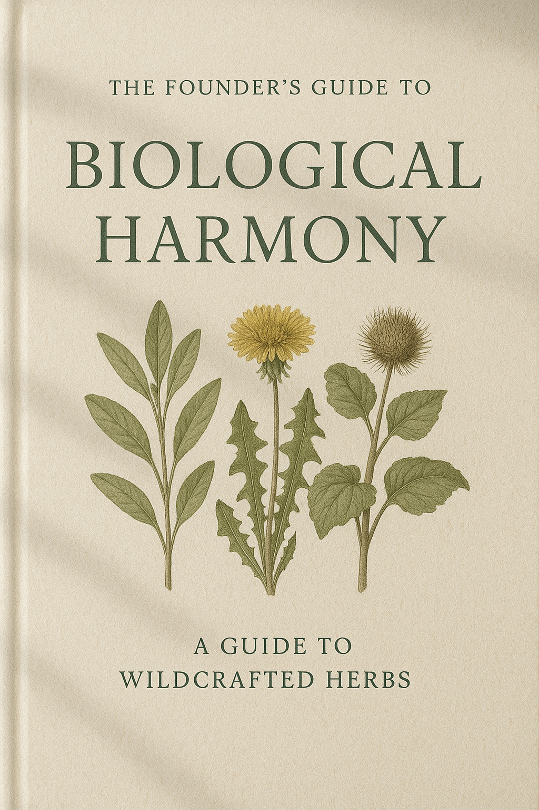

Many journeys toward systemic balance fail because they overlook the body’s natural rhythms and biological order. Before focusing on elimination, traditional wisdom suggests prioritizing the body’s innate drainage pathways and maintaining an alkaline environment. This guide outlines a traditional approach to supporting your body’s natural restoration.
In this wellness philosophy, we prioritize supporting the body's natural cleansing mechanisms. Traditionally, practitioners focus on ensuring that waste moves efficiently from the cells and lymph, through the liver, and out through the colon. Before starting any new wellness practice, please consult with a health specialist.
Maintaining regular elimination is a cornerstone of traditional biological order.
Bile is often viewed in traditional practices as a key vehicle for the body’s natural waste excretion.
Hydration is a key part of maintaining biological harmony. Speak with a health specialist about your specific mineralization needs.
The skin is a major organ of elimination. consult your health specialist before starting any heat-based therapies.
Traditional wellness practices often speak of "biofilms"—protective matrices that can form in the body. Always discuss these with a health specialist first.
The Traditional Strategy: Support and Restore.
Aligning wellness practices with the lunar cycle is a long-standing tradition based on observing biological rhythms. consult a health specialist before starting any herbal regimen.
Traditional Observations:
Many traditions observe that biological activity may shift during a Full Moon. Practitioners often choose these times to focus more intensely on their wellness journey.
As the body shifts toward balance, some may experience temporary shifts in energy or comfort. Consult with a health specialist about how to integrate traditional support strategies.
Traditional Support Strategies:
A successful wellness journey is a marathon of consistency. By supporting your body’s natural pathways and maintaining an alkaline foundation, you can seek a transformation rooted in biological restoration.
The Clenzara Pro App provides a tracker to help you monitor your journey, observe your symptoms, and follow traditional lunar cycles.
Join the Clenzara Pro Waitlist →